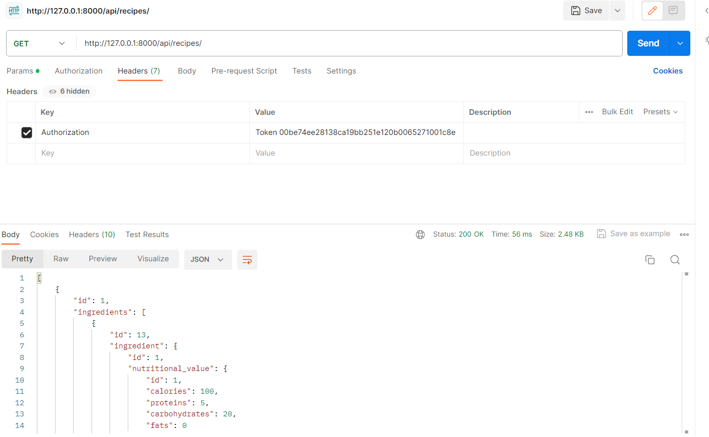

Отчет по лабораторной работе №3
Выполнил: Акулов Алексей, K33391
Цель работы:
Овладеть практическими навыками и умениями реализации web-сервисов средствами Django.
Модель
Я делал свой собственный вариант, согласовав его предварительно с преподаватеями. Идея сайта: модульные рецепты, которые пользователь может составить самостоятельно + возможность добавлять ингредиенты и инструменты для рецептов и собирать планы питания. Также нужно не забыть добавить профиль для пользователя.
from django.db import models
from django.contrib.auth.models import AbstractUser
class Ingredient(models.Model):
name = models.CharField(max_length=255)
allergens = models.CharField(max_length=255, blank=True)
is_vegetarian = models.BooleanField(default=False)
nutritional_value = models.ForeignKey('NutritionalValue',
on_delete=models.SET_NULL, null=True,
blank=True)
class NutritionalValue(models.Model):
calories = models.IntegerField()
proteins = models.IntegerField()
carbohydrates = models.IntegerField()
fats = models.IntegerField()
class Tool(models.Model):
name = models.CharField(max_length=255)
cleaning_time = models.IntegerField()
class Recipe(models.Model):
difficulty_types = (
("E", "Easy"),
("M", "Medium"),
("H", "Hard"),
)
title = models.CharField(max_length=255)
preparation_time = models.IntegerField()
cooking_time = models.IntegerField()
difficulty_level = models.CharField(max_length=2, choices=difficulty_types)
region = models.CharField(max_length=255, blank=True)
is_vegetarian = models.BooleanField(default=False)
image_url = models.URLField(blank=True)
ingredients = models.ManyToManyField(Ingredient,
through='RecipeIngredient')
tools = models.ManyToManyField(Tool, through='RecipeTool')
class MealPlan(models.Model):
date = models.DateField()
breakfast = models.ForeignKey(Recipe, related_name='meal_plan_breakfast',
on_delete=models.SET_NULL, null=True,
blank=True)
lunch = models.ForeignKey(Recipe, related_name='meal_plan_lunch',
on_delete=models.SET_NULL, null=True, blank=True)
dinner = models.ForeignKey(Recipe, related_name='meal_plan_dinner',
on_delete=models.SET_NULL, null=True,
blank=True)
class RecipeIngredient(models.Model):
recipe = models.ForeignKey(Recipe, on_delete=models.CASCADE)
ingredient = models.ForeignKey(Ingredient, on_delete=models.CASCADE)
quantity = models.CharField(max_length=100)
class RecipeTool(models.Model):
recipe = models.ForeignKey(Recipe, on_delete=models.CASCADE)
tool = models.ForeignKey(Tool, on_delete=models.CASCADE)
class UserProfile(AbstractUser):
favorite_recipe = models.ForeignKey(Recipe, on_delete=models.CASCADE, null=True, blank=True)
Нужно не забыть провести миграции модели
Serializers
Сериализаторы пишем обычно, выводя все поля и ставя вложенные сериализаторы для более логичной работы с апи
from django.contrib.auth.hashers import make_password
from rest_framework import serializers
from .models import Ingredient, NutritionalValue, Tool, Recipe, MealPlan, \
RecipeIngredient, RecipeTool, UserProfile
class NutritionalValueSerializer(serializers.ModelSerializer):
class Meta:
model = NutritionalValue
fields = '__all__'
class IngredientSerializer(serializers.ModelSerializer):
nutritional_value = NutritionalValueSerializer(read_only=True)
class Meta:
model = Ingredient
fields = '__all__'
class ToolSerializer(serializers.ModelSerializer):
class Meta:
model = Tool
fields = '__all__'
class RecipeIngredientSerializer(serializers.ModelSerializer):
ingredient = IngredientSerializer()
class Meta:
model = RecipeIngredient
fields = '__all__'
class RecipeToolSerializer(serializers.ModelSerializer):
tool = ToolSerializer()
class Meta:
model = RecipeTool
fields = '__all__'
class RecipeSerializer(serializers.ModelSerializer):
ingredients = RecipeIngredientSerializer(source='recipeingredient_set',
many=True, read_only=True)
tools = RecipeToolSerializer(source='recipetool_set', many=True, read_only=True)
class Meta:
model = Recipe
fields = '__all__'
class MealPlanSerializer(serializers.ModelSerializer):
breakfast = RecipeSerializer()
lunch = RecipeSerializer()
dinner = RecipeSerializer()
class Meta:
model = MealPlan
fields = '__all__'
class UserProfileSerializer(serializers.ModelSerializer):
favorite_recipe = serializers.PrimaryKeyRelatedField(
queryset=Recipe.objects.all(), allow_null=True)
class Meta:
model = UserProfile
fields = (
"id",
"password",
"username",
"email",
"first_name",
"last_name",
"favorite_recipe"
)
def create(self, validated_data):
return super().create({**validated_data, "password": make_password(
validated_data["password"])})
Views
Дальше делаем вьюхи для апи. Нужно настроить самостоятельно update и create для рецепта и ингредиента, т.к. они используют встроенные сериализаторы, также пишем несколько дополнительных апи методов: нахождение самого калорийного плана, нахождение блюда по ингредиенту
from django.db.models import Sum
from django.shortcuts import get_object_or_404
from rest_framework import viewsets, status
from rest_framework.decorators import action, api_view, permission_classes
from rest_framework.permissions import IsAdminUser, AllowAny
from rest_framework.response import Response
from .models import Ingredient, NutritionalValue, Tool, Recipe, MealPlan, \
RecipeIngredient, UserProfile, RecipeTool
from .serializers import IngredientSerializer, NutritionalValueSerializer, \
ToolSerializer, RecipeSerializer, MealPlanSerializer, UserProfileSerializer
class IngredientViewSet(viewsets.ModelViewSet):
queryset = Ingredient.objects.all()
serializer_class = IngredientSerializer
def create(self, request, *args, **kwargs):
serializer = self.get_serializer(data=request.data)
serializer.is_valid(raise_exception=True)
nutritional_data = request.data.get('nutritional_value')
nutritional_value = None
if nutritional_data:
nutritional_serializer = NutritionalValueSerializer(
data=nutritional_data)
if nutritional_serializer.is_valid():
if 'id' in nutritional_data:
nutritional_value = NutritionalValue.objects.get(
id=nutritional_data['id'])
else:
nutritional_value = NutritionalValue.objects.create(
**nutritional_serializer.validated_data)
ingredient_data = serializer.validated_data
ingredient_data['nutritional_value'] = nutritional_value
ingredient = Ingredient.objects.create(**ingredient_data)
output_serializer = IngredientSerializer(ingredient)
return Response(output_serializer.data, status=status.HTTP_201_CREATED)
def destroy(self, request, *args, **kwargs):
instance = self.get_object()
self.perform_destroy(instance)
return Response(status=status.HTTP_204_NO_CONTENT)
class NutritionalValueViewSet(viewsets.ModelViewSet):
queryset = NutritionalValue.objects.all()
serializer_class = NutritionalValueSerializer
class ToolViewSet(viewsets.ModelViewSet):
queryset = Tool.objects.all()
serializer_class = ToolSerializer
class RecipeViewSet(viewsets.ModelViewSet):
queryset = Recipe.objects.all()
serializer_class = RecipeSerializer
def create(self, request, *args, **kwargs):
serializer = self.get_serializer(data=request.data)
serializer.is_valid(raise_exception=True)
recipe_data = serializer.validated_data
recipe = Recipe.objects.create(
title=recipe_data['title'],
preparation_time=recipe_data['preparation_time'],
cooking_time=recipe_data['cooking_time'],
difficulty_level=recipe_data['difficulty_level'],
region=recipe_data.get('region', ''),
is_vegetarian=recipe_data['is_vegetarian'],
image_url=recipe_data.get('image_url', '')
)
for ingredient_data in request.data.get('ingredients', []):
ingredient_id = ingredient_data['id']
quantity = ingredient_data['quantity']
ingredient = get_object_or_404(Ingredient, id=ingredient_id)
RecipeIngredient.objects.create(recipe=recipe, ingredient=ingredient, quantity=quantity)
for tool_data in request.data.get('tools', []):
tool_id = tool_data['id']
tool = get_object_or_404(Ingredient, id=tool_id)
RecipeTool.objects.create(recipe=recipe, tool=tool)
output_serializer = RecipeSerializer(recipe)
headers = self.get_success_headers(output_serializer.data)
return Response(output_serializer.data, status=status.HTTP_201_CREATED, headers=headers)
def update(self, request, *args, **kwargs):
partial = kwargs.pop('partial', False)
instance = self.get_object()
serializer = self.get_serializer(instance, data=request.data,
partial=partial)
serializer.is_valid(raise_exception=True)
self.perform_update(serializer)
if 'ingredients' in request.data:
RecipeIngredient.objects.filter(recipe=instance).delete()
for ingredient_data in request.data['ingredients']:
ingredient_id = ingredient_data['ingredient']['id']
quantity = ingredient_data['quantity']
ingredient = get_object_or_404(Ingredient, id=ingredient_id)
RecipeIngredient.objects.create(recipe=instance,
ingredient=ingredient,
quantity=quantity)
if 'tools' in request.data:
RecipeTool.objects.filter(recipe=instance).delete()
for tool_data in request.data['tools']:
tool_id = tool_data['tool']['id']
tool = get_object_or_404(Tool, id=tool_id)
RecipeTool.objects.create(recipe=instance, tool=tool)
return Response(serializer.data)
def find_highest_calorie_plan():
max_calorie_plan = None
max_calories = 0
for plan in MealPlan.objects.all():
total_calories = 0
for recipe in [plan.breakfast, plan.lunch, plan.dinner]:
if recipe:
for recipe_ingredient in RecipeIngredient.objects.filter(
recipe=recipe):
if recipe_ingredient.ingredient.nutritional_value.calories:
calories_per_unit = recipe_ingredient.ingredient.\
nutritional_value.calories
#quantity = float(recipe_ingredient.quantity)
total_calories += calories_per_unit
if total_calories > max_calories:
max_calories = total_calories
max_calorie_plan = plan
return max_calorie_plan
class MealPlanViewSet(viewsets.ModelViewSet):
queryset = MealPlan.objects.all()
serializer_class = MealPlanSerializer
@action(detail=False)
def highest_calorie_plan(self, request):
max_calorie_plan = find_highest_calorie_plan()
if max_calorie_plan:
serializer = self.get_serializer(max_calorie_plan)
return Response(serializer.data)
else:
return Response({'status': 'no meal plans found'},
status=status.HTTP_404_NOT_FOUND)
@api_view(["POST"])
def find_recipes_by_ingredient(request):
ingredient_name = request.data["name"]
queryset = Recipe.objects.filter(ingredients__name=ingredient_name)
serializer = RecipeSerializer(queryset, many=True)
return Response(serializer.data, status=status.HTTP_200_OK)
@api_view(["POST"])
def find_recipes_by_nutrition(request):
min_calories = request.data.get("min_calories", 0)
min_proteins = request.data.get("min_proteins", 0)
min_carbs = request.data.get("min_carbs", 0)
min_fats = request.data.get("min_fats", 0)
queryset = Recipe.objects.annotate(
total_calories=Sum('ingredients__nutritional_value__calories'),
total_proteins=Sum('ingredients__nutritional_value__proteins'),
total_carbohydrates=Sum('ingredients__nutritional_value__carbohydrates'),
total_fats=Sum('ingredients__nutritional_value__fats')
).filter(
total_calories__gte=min_calories,
total_proteins__gte=min_proteins,
total_carbohydrates__gte=min_carbs,
total_fats__gte=min_fats
)
serializer = RecipeSerializer(queryset, many=True)
return Response(serializer.data, status=status.HTTP_200_OK)
class UserProfileViewSet(viewsets.ModelViewSet):
permission_classes = [IsAdminUser]
queryset = UserProfile.objects.all()
serializer_class = UserProfileSerializer
def create(self, request, *args, **kwargs):
serializer = self.get_serializer(data=request.data)
serializer.is_valid(raise_exception=True)
self.perform_create(serializer)
headers = self.get_success_headers(serializer.data)
return Response(serializer.data, status=status.HTTP_201_CREATED,
headers=headers)
@action(detail=True, methods=['patch'])
def partial_update_profile(self, request, pk=None):
instance = self.get_object()
partial_data = request.data
serializer = self.get_serializer(instance, data=partial_data,
partial=True)
serializer.is_valid(raise_exception=True)
for key, value in serializer.validated_data.items():
setattr(instance, key, value)
instance.save()
return Response(self.get_serializer(instance).data)
def destroy(self, request, *args, **kwargs):
instance = self.get_object()
self.perform_destroy(instance)
return Response(status=status.HTTP_204_NO_CONTENT)
Ссылки
Остаются ссылки. Здесь воспользуемся роутером.
from django.urls import path, include
from rest_framework.routers import DefaultRouter
from .views import IngredientViewSet, NutritionalValueViewSet, \
ToolViewSet, RecipeViewSet, MealPlanViewSet, find_recipes_by_nutrition, \
find_recipes_by_ingredient, UserProfileViewSet
router = DefaultRouter()
router.register(r'ingredients', IngredientViewSet)
router.register(r'nutritionalvalues', NutritionalValueViewSet)
router.register(r'tools', ToolViewSet)
router.register(r'recipes', RecipeViewSet)
router.register(r'mealplans', MealPlanViewSet)
router.register(r'users', UserProfileViewSet)
urlpatterns = [
path('', include(router.urls)),
path('mealplans/highest_calorie_plan/',
MealPlanViewSet.as_view({'get': 'highest_calorie_plan'})),
path('find_recipe/', find_recipes_by_nutrition),
path('find_recipe_ing/', find_recipes_by_ingredient)
]
Работа
Также стоит не забыть изменить файл настроек в главном проекте. После этого нужно через /auth/users/ полчуить токен и использовав его в заголовке отправить нужные запросы. Примеры:
Получение ингредиентов: 
Добавление ингредиента:
Вывод
При выполнении данной лабораторной работы я изучил работу с DjangoREST